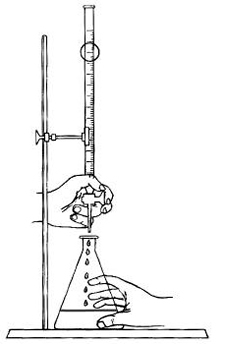

| Objetivo: |
Al finalizar la práctica, el alumno realizará cálculos estequiométricos de acuerdo a las leyes pondérales y masas molares de los compuestos para la determinación del porcentaje en masa |
| Material |
| Introducción: |
| La concentración es la magnitud química que expresa la cantidad de un elemento o un compuesto por unidad de volumen. En el SI se emplean las unidades mol·m-3. Cada sustancia tiene una solubilidad que es la cantidad máxima de soluto que puede disolverse en una disolución, y depende de condiciones como la temperatura, presión, y otras substancias disueltas o en suspensión. En química, para expresar cuantitativamente la proporción entre un soluto y el disolvente en una disolución se emplean distintas unidades: molaridad, normalidad, molarlidad, formalidad, porcentaje en peso, porcentaje en volumen, fracción molar, partes por millón, partes por billón, partes por trillón, etc. También se puede expresar cualitativamente empleando términos como diluido, para bajas concentraciones, o concentrado, para altas. |
| Desarrollo Experimental: |
| Montar un sistema para hacer una titulación (Figura 1). Experimento 1:
|
| Resultados y Conclusiones : |
|
1) ¿Cuál es la función de la fenolftaleína en la titulación del vinagre? 2) Calcular el promedio de los volúmenes obtenidos en la valoración. Vm=V(1)+V(2)+V(3) / 3 3) Calcular el número de moles de NaOH para el volumen consumido en la valoración, aplicando el concepto de molaridad, asociado al sistema de regla de tres. 4) Determinar el porcentaje de ácido acético en el vinagre. 5) Citar aplicaciones del ácido acético. El vinagre, muy utilizado en la preparación de carnes y ensaladas, es una solución resultante de la fermentación de algunas bebidas alcohólicas, particularmente del vino. En la fermentación del vino, el alcohol etílico (etanol – CH3CH2CH) es transformado por la acción de microorganismos de la especie Mycoderma aceti, en una mezcla de ácidos carboxílicos, con aproximadamente 4 a 5% de ácido acético y recibe el nombre de vinagre. El Mycoderma aceti actúa como catalizador, pues sin su intervención el oxígeno molecular no transforma el alcohol en ácido acético a no ser en cantidades prácticamente nulas. El tenor de ácido acético en el vinagre puede ser determinado a través de la titulación con una solución patrón de NaOH 0,1 M (*fc = 0,970), usando a fenolftaleína como indicador. Durante el proceso reaccionan el ácido acético (CH3COOH) y el hidróxido de sodio (NaOH), produciendo acetato de sodio (CH3COO Na) y agua. CH3COOH (aq)+ NaOH(aq)→ CH3COONa(aq) + H2O Si se considera que toda la acidez del vinagre se debe apenas al ácido acético, puede calcularse la concentración de ácido acético en el vinagre de la forma indicada a seguir. 1) Cantidad de materia de CH3COOH por litro (moles/l)CH3COOH (aq) + NaOH(aq) →CH3COONa(aq)+ H2O 0,1 mol de NaOH x 0,970 ___ 1000 ml de solución X mols ___ (promedio de los volúmenes gastados en la valoración) X = ___ moles de NaOH 2) Cantidad de materia de ácido que reacciona con X moles de NaOH: 1 mol de CH3COOH ___ 1 mol de NaOH Y moles___ X moles de NaOH (ítem 1) Y = ___ moles de CH3COOH 3) Concentración de la muestra en cantidad de materia de CH3COOH por litro de solución (por litro de vinagre): Y moles de CH3COOH (ítem 2)___ 1 ml. de vinagre (cantidad de muestra valorada) Z ___ 1000 ml. de vinagre Z = ___ moles/l Z = Y*1000/1 4) Gramos de CH3COOH por litro de solución (g/l) 1 mol de CH3COOH ___60 g de CH3COOH. Z (ítem 3) ___ W g. de CH3COOH W = ___ g. de CH3COOH. Por lo tanto, la muestra de vinagre utilizada contiene __________ de ácido acético por litro. 5) Calculo del porcentaje del ácido acético en el vinagre: 1000 g. de solución de CH3COOH ___ W g de CH3COO (ítem 4) 100 g. de solución de CH3COOH ___ T g de CH3COOH / 1000 T= 100*W / 1000 T = ___ % de ácido acético en el vinagre. NOTA: fc = factor de corrección, es un número que expresa la relación entre la concentración real (Cr) de la solución, a través de la titulación y la concentración esperada cuando preparada la solución (Ce). fc=Cr/Ce El factor de corrección es utilizado para corregir errores cometidos durante la preparación de una solución. |
| Figura 1: Sistema para efectuar una titulación |
|  |